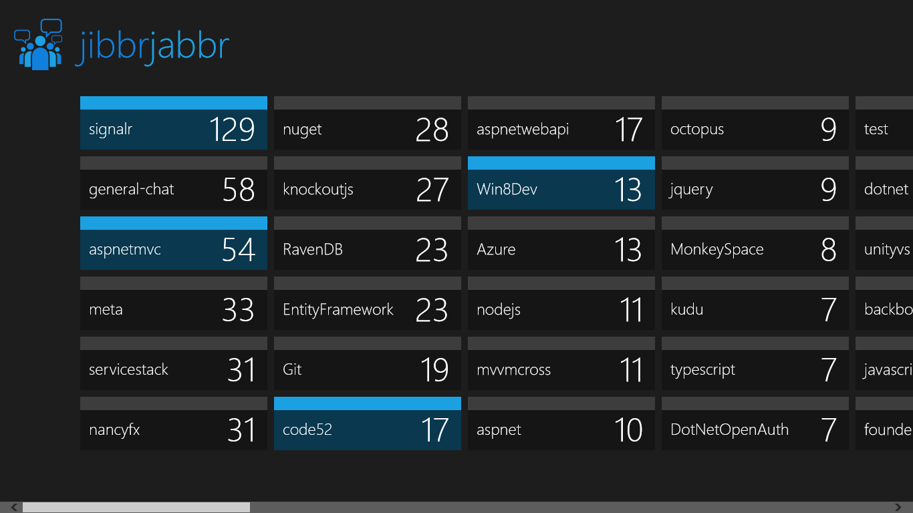

Jibbr Jabbr is a JabbR client for Windows 8, a chat service built with ASP.NET using SignalR. It is focused on being a clean, fast and authentic way to interact with the service.
It requires your data connection to connect to the JabbR web service.
Post comments below if you have any problems, or have any recommendations for features to include. And, if you like it, post a review in the Windows Store.
privacy policy
changes
v1.0 - First release!
screenshots
